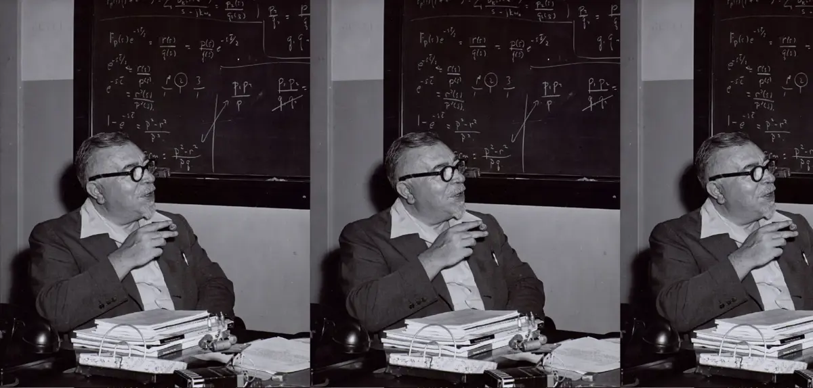
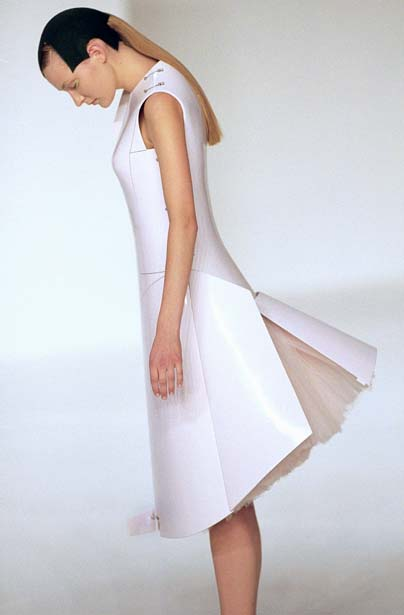
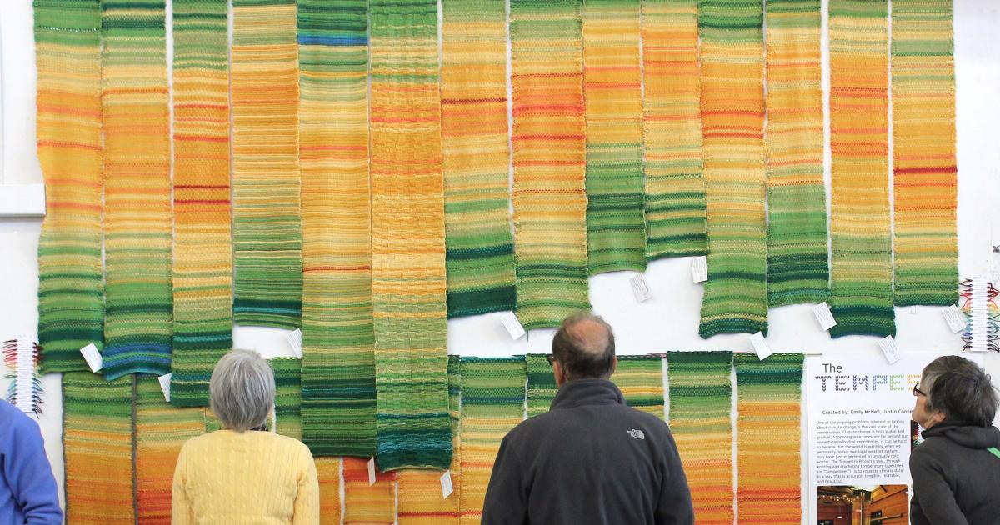
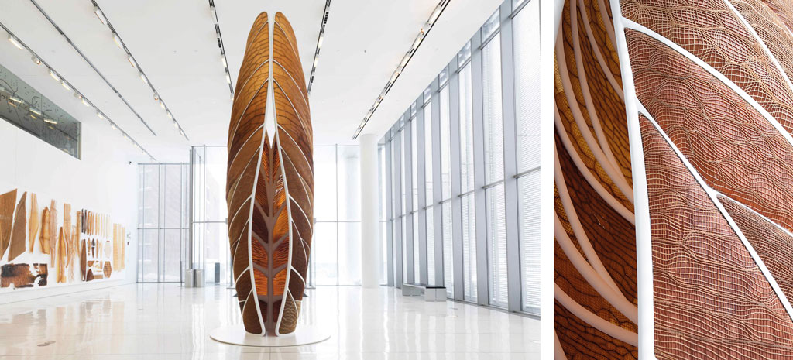

1948
Cybernetic Design: Norbert Wiener & Adaptive Systems
Norbert Wiener, the MIT mathematician and "father of cybernetics," defined systems that self-regulate through feedback—the same kind of logic behind garments that adapt to body and environment. His 1948 book Cybernetics: Or Control and Communication in the Animal and the Machine laid the foundation for thinking machines and regulation across biology and technology. This lineage invites us to imagine clothes not as static attire but as active systems that learn and adjust in real time.

1960s
Responsive Architecture: Nicholas Negroponte & Cedric Price's Fun Palace
Thinkers like Nicholas Negroponte and Cedric Price pioneered architecture that could respond to users and environments. Price's Fun Palace was conceived as a modular, reconfigurable structure, and Negroponte coined the idea of "architecture machines"—environments with embedded logic and agency. These ideas directly resonate with wearable systems that shape-shift in context, treating the garment as an architectural artifact for the body.

2000s
Digital Garment Experiments: Hussein Chalayan
Hussein Chalayan redefined the boundaries of fashion by treating garments as kinetic sculptures. His collections in the late 1990s and early 2000s featured groundbreaking experiments like the remote-controlled dresses in Before Minus Now and the iconic Airplane Dress, which unfolded and transformed its structure in real time. These works blurred the line between fashion, technology, and performance, positioning clothing as an engineered system rather than a static object. Chalayan's vision framed garments as carriers of narrative and innovation—opening a path for fashion to become dynamic, adaptive, and conceptually architectural.

2010s
Environmental Visualization: Radical Cartography & Data Art
Radical cartography and data-driven art use mapping to make hidden systems visible—climate patterns, mobility flows, and urban inequalities. Projects like Bill Rankin's radicalcartography.net and The Tempestry Project, which translates temperature data into knit patterns, show how data can become a sensory, cultural artifact. These practices highlight how visualization turns complex environmental forces into something we can read, feel, and interpret—providing a foundation for imagining garments that carry this information onto the body.

2019
Climate Adaptation & Material Ecology: Neri Oxman
Neri Oxman's concept of material ecology combines biology, material science, and computation to create designs that adapt and biodegrade in harmony with natural systems. Her work envisions a future where objects, and by extension garments, are not static products but living interfaces that grow, change, and return to the environment. This approach offers both an ethical and aesthetic model for responsive design, aligning fashion with principles of sustainability and ecological resilience.
